The Departed
Main Content
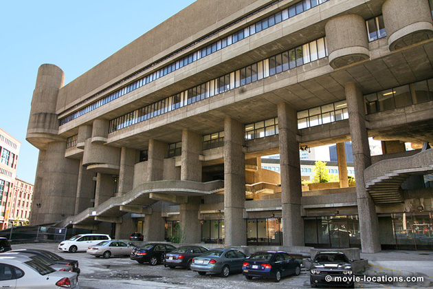
Martin Scorsese finally gets the Best Director Oscar he should have won for Taxi Driver, Raging Bull or Goodfellas with this remake of Hong Kong action movie Infernal Affairs. Although the film makes much of the setting as Boston, much of it was filmed in New York.
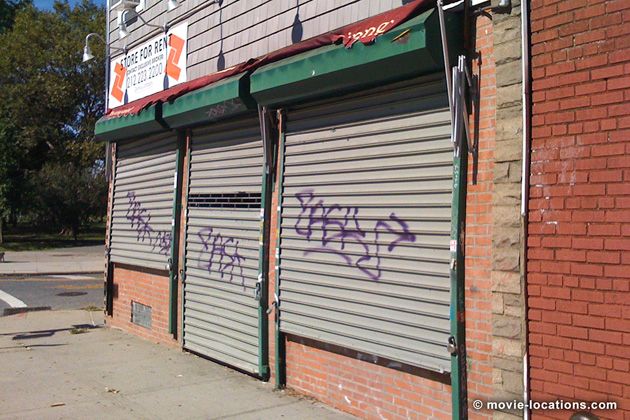
For instance, the grocery store where young Colin Sullivan first comes under the spell of mob boss Frank Costello (Jack Nicholson) – and later, Billy Costigan (Leonardo DiCaprio) gives a hiding to the heavies from Providence – was Park Luncheonette, which could be found in Brooklyn, at 334 Driggs Avenue, on the corner of Lorimer Street in Greenpoint. It’s currently (late 2012) closed for renovation.
Being Scorsese, there’s a strong religious theme running through the film, so it comes as no surprise to see the initially innocent Colin serving as altar boy at St. Francis Xavier Church, 225 Sixth Avenue, at Carrol Street, in Brooklyn’s Park Slope district.
The police academy, where both Billy and the older Colin (Matt Damon) train for the force, is Historic Fort Schuyler, on the campus of State University of New York’s Maritime College, situated at the northern end of Throggs Neck Bridge in the Bronx.
The paths of the two recruits mirror each other, with Billy suffering righteously as a police mole in the mob, and Colin enjoying the good life as Costello’s man in the police force.
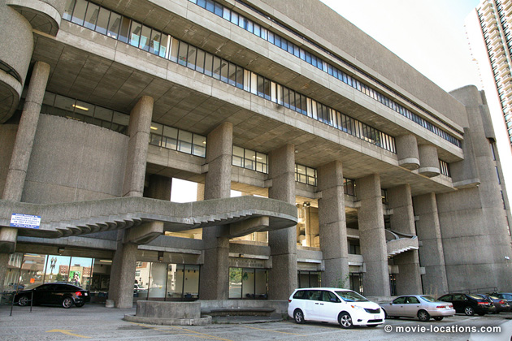
The exterior of the ‘Special Investigation Unit’, where Billy gets a hard time from good cop Queenan (Martin Sheen) and bad cop Dignam (Mark Wahlberg) really is Boston – though not the city’s police department.
The forbidding concrete fortress is the rear of the Erich Lindemann Health Center, Hurley Building, at the junction of Staniford Street and Merrimac Street in the West End, not far from North Station.
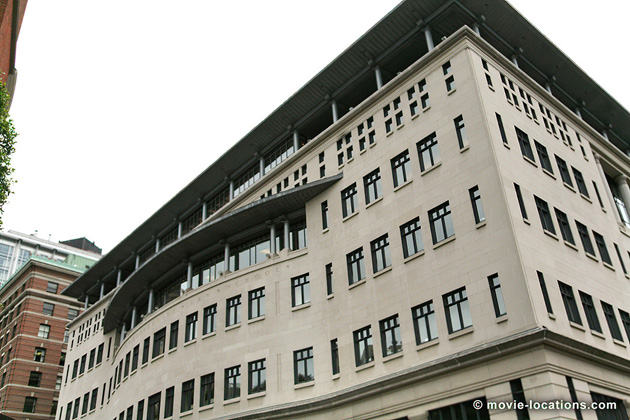
With his gangland connections, Colin is set up in a flash penthouse apartment offering that great view of the gleaming golden dome of Massachusetts State House, dominating the skyline on Beacon Street. Even with big money behind you, you’ll have a hard time renting this enviable location, which is the top floor library of Suffolk University Law School at 120 Tremont Street.
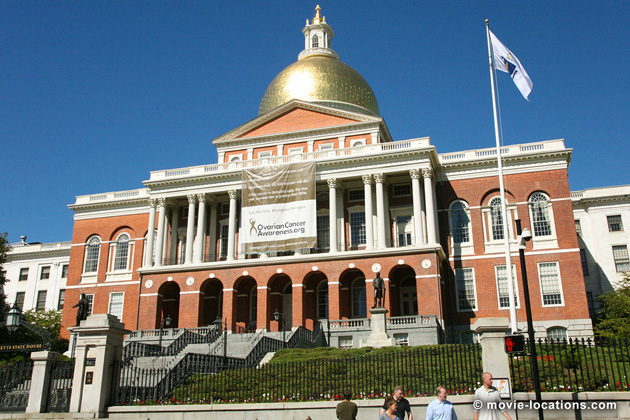
It’s back to Brooklyn for the funeral of Billy Costigan’s mother, at Greenwood Cemetery, 500 25th Street, where the film gets its title from the wreath: “Heaven holds the faithful Departed”. The cemetery is also used for the full police funeral at the end of the movie.
Going underground, Billy meets up with Costello’s muscle, Mr French (Ray Winstone). The bar, where Billy orders cranberry juice and establishes his macho credentials by smashing a glass over a guy’s head, is Irish Haven, 5721 Fourth Avenue, still in Brooklyn.
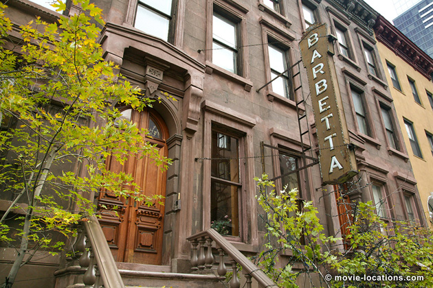
Crime, though, seems to pay. While Billy plunges deeper into the sleazy into the underworld, Colin is treating police shrink Madolyn (Vera Farmiga) to gigantic dessert in a fancy French restaurant. This is indeed a classy restaurant, and you’ll find it in the heart of midtown Manhattan. It’s Barbetta, 321 West 46th Street at 8th Avenue – it seems to be a Woody Allen favourite, having appeared in both Alice and Celebrity (with Leonardo DiCaprio).
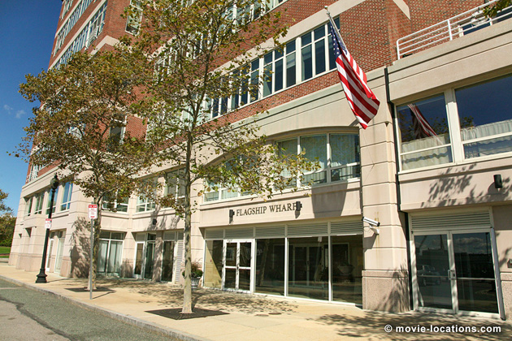
And boss Costello himself is living luxuriously in Boston’s prestigious Flagship Wharf, 197 8th Street, on the waterfront east of Charlestown.
It’s back to Brooklyn, though, to find ‘Lobster Palace’, the seafood restaurant, where Costello reminds a pair of worldly priests who’s actually running the show, which is Tamaqua Bar & Marina, 84 Ebony Court, Gerritsen Beach, on the coast a couple of miles east of Coney Island.
The increasingly stressed-out Costigan has an edgy secret meeting with his controllers, Queenan and Dignam, on the stretch of the Neponset Trail between the Neponset road and rail bridges in Dorchester, about 5 miles south of Boston, where – to add to his worries – he’s told that Costello has a spy in the department.
From the footbridge at Boston’s Logan International Airport, Billy phones Dignam to confirm that there is a rat in the department.
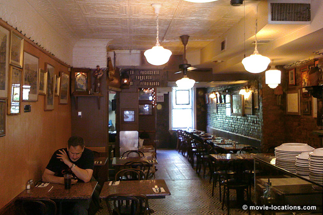
Now it’s Billy’s turn to take out Madolyn, though being on the side of the angels, the date is more modest. Still New York, though. They enjoy coffee at Fernando’s Focacceria Ristorante, 151 Union Street, between Columbia and Hicks Streets, Cobble Hill in Brooklyn.
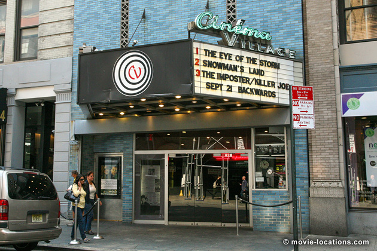
The golf driving range, where Ellerby (Alec Baldwin) sets Colin to look for the police mole, is Brooklyn Driving Range, 3200 Flatbush Avenue. And it’s not too far into Manhattan to find the porn cinema where Colin meets the increasingly flaky, dildo-waving Costello, which is Cinema Village, 22 East 12th Street at 5th Avenue near Union Square.
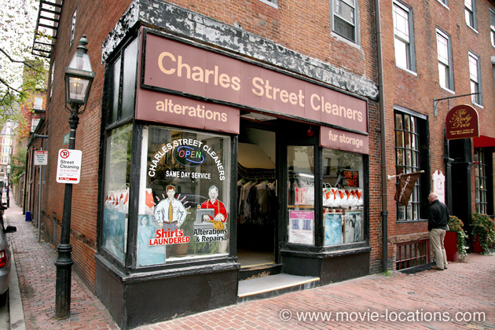
The bar serving as Costello’s HQ is a real mash-up of Boston and New York. The exterior really is Boston, but it’s not a bar. It’s a dry cleaning establishment. Charles Street Cleaners, 17 Charles Street on Beacon Hill was dressed as the ‘Charles Street Brasserie’.
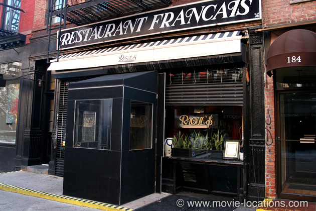
The interior is that of the venerable French restaurant Raoul’s, 180 Prince Street, between Sullivan and Thompson Streets in SoHo, which you can see again in Sex And The City.
Charged with tracking down the rat, the devious Colin begins to cast suspicion in the direction of the blameless Queenan, who is tailed from Boston’s Red Line Park Station (not far from the HQ building) two stops to South Station.
The fateful rooftop, from which Queenan is thrown, and where Billy and Colin finally confront each other, is 12 Farnsworth Street, north of Congress Street at Boston’s Fort Point.
Visit Info
Visit The Film Locations
Massachusetts | Boston
Visit: Massachusetts
Visit: Boston
Flights: Logan International Airport, 1 Harborside Drive, Boston, MA 02128 (tel: 800.235.6426)
Travel around: MBTA (Massachusetts Bay Transportation Authority)
Visit: Massachusetts State House, 24 Beacon Street, Boston, MA 01233 (tel: 617.722.2000)
Tour: Massachusetts State House
New York
Flights: John F Kennedy International Airport, New York, NY 11430 (tel: 718.244.4444)
Visit: New York
Travel around: MTA
Dine at: Barbetta, 321 West 46th Street, New York, NY 10036 (tel: 212.246.9171)
Dine at: Raoul’s, 180 Prince Street, SoHo, New York, NY 10012 (tel: 212.966.3518)
Visit: Tamaqua Bar & Marina, 84 Ebony Court, Gerritsen Beach, Brooklyn, NY 11229 (tel: 718.646.9212)
Visit: Focacceria Ristorante, 151 Union Street, Brooklyn, NY 11231 (tel: 718.855.1545)
Catch a film at: Cinema Village, 22 East 12th Street, New York, NY 10003 (tel: 212.924.3363)